Membership


 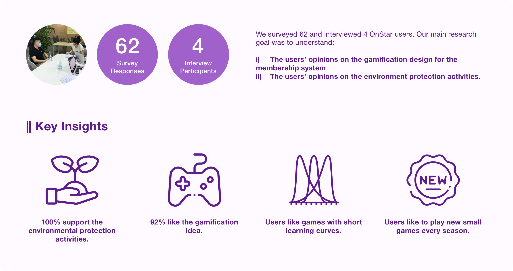
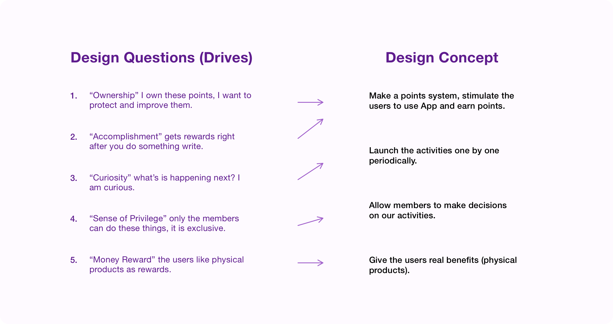
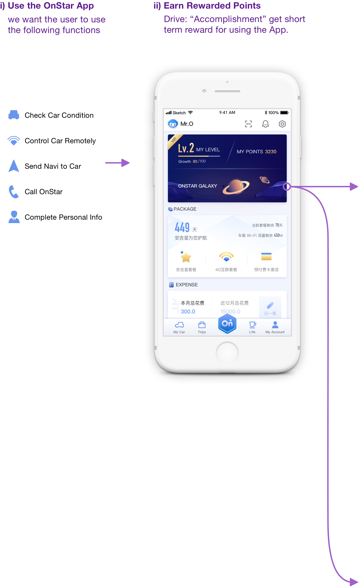
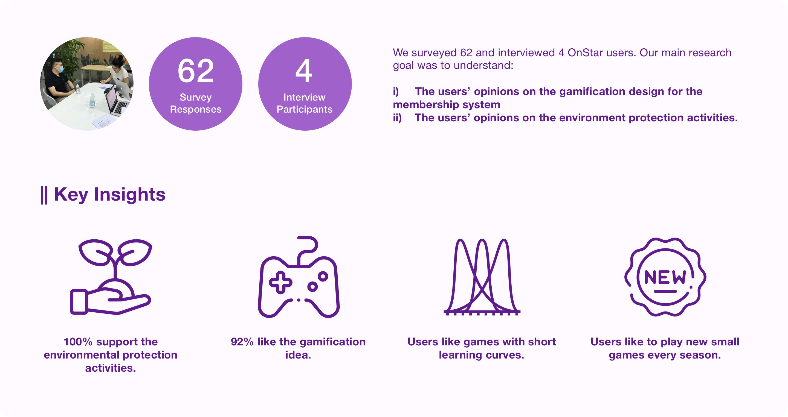
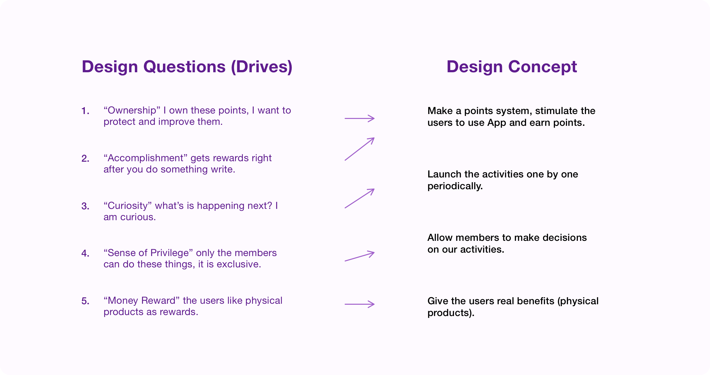
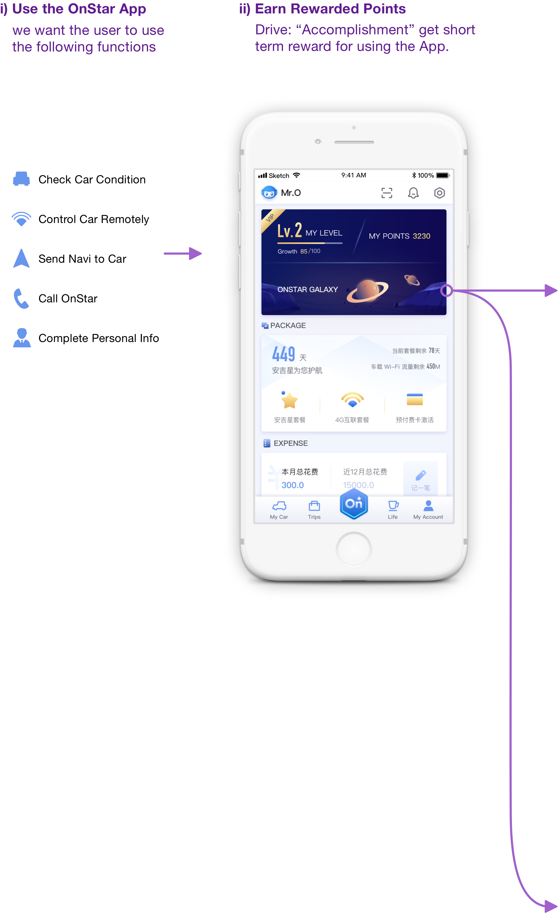
 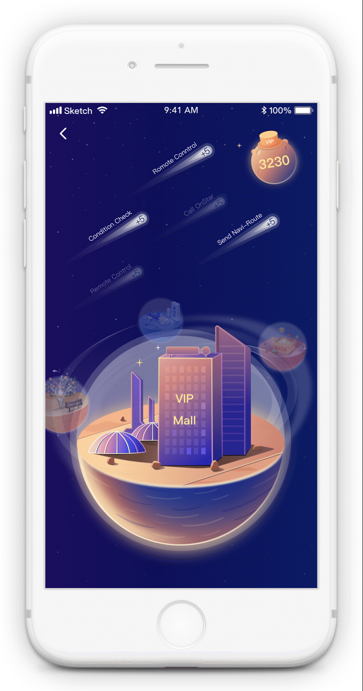
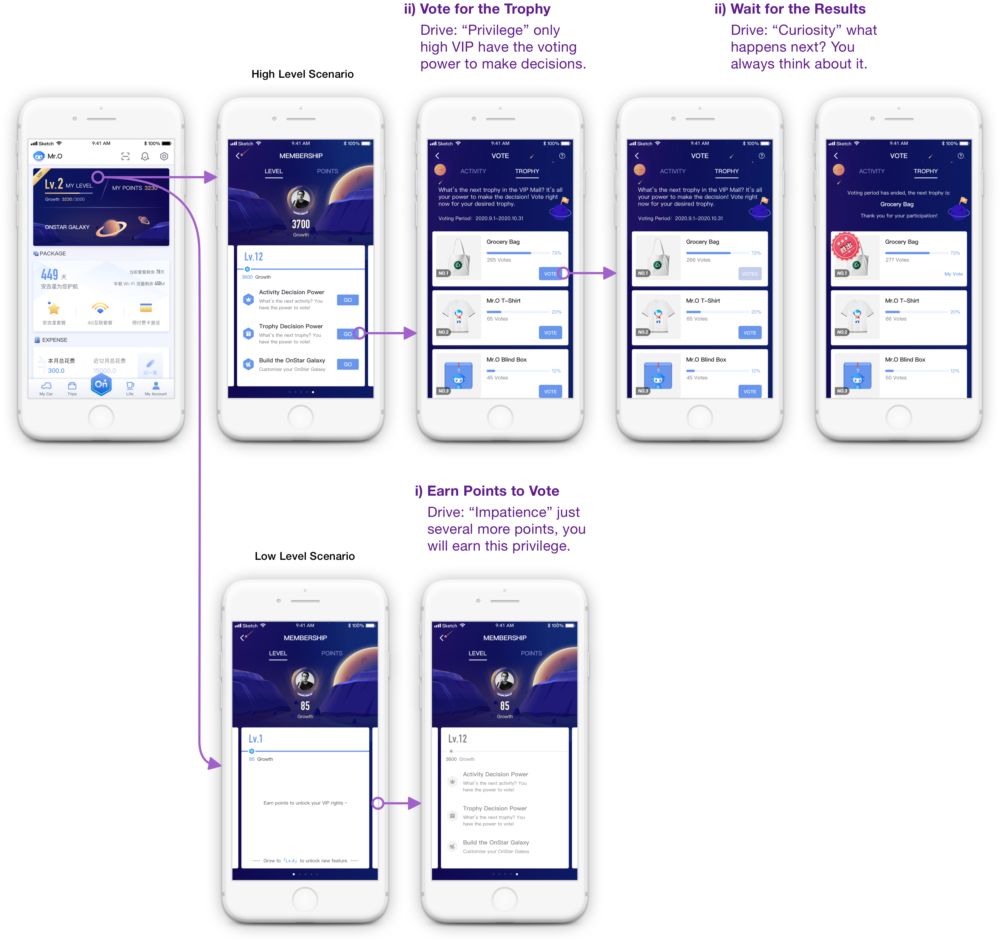
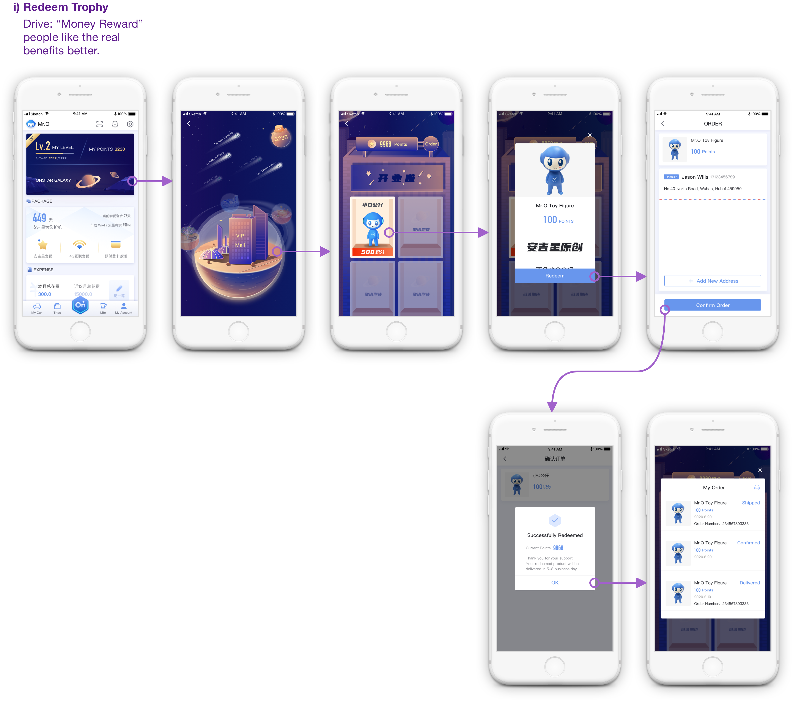
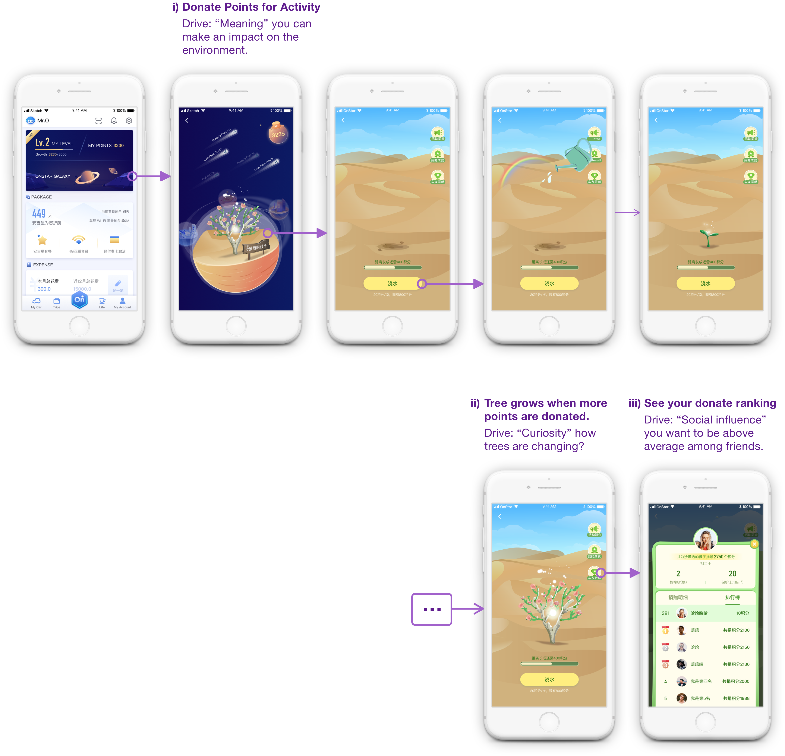
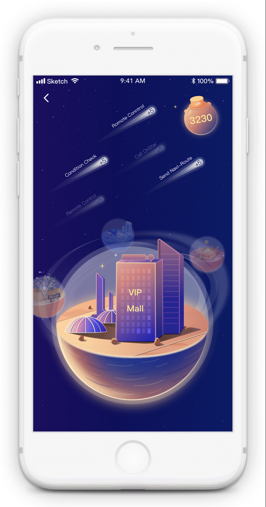
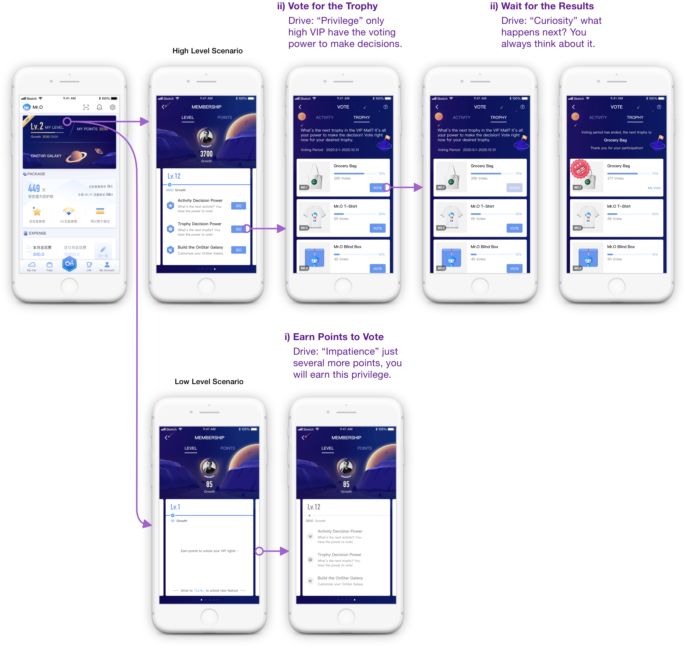
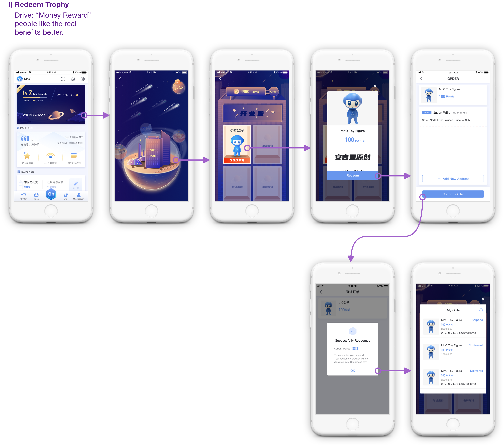
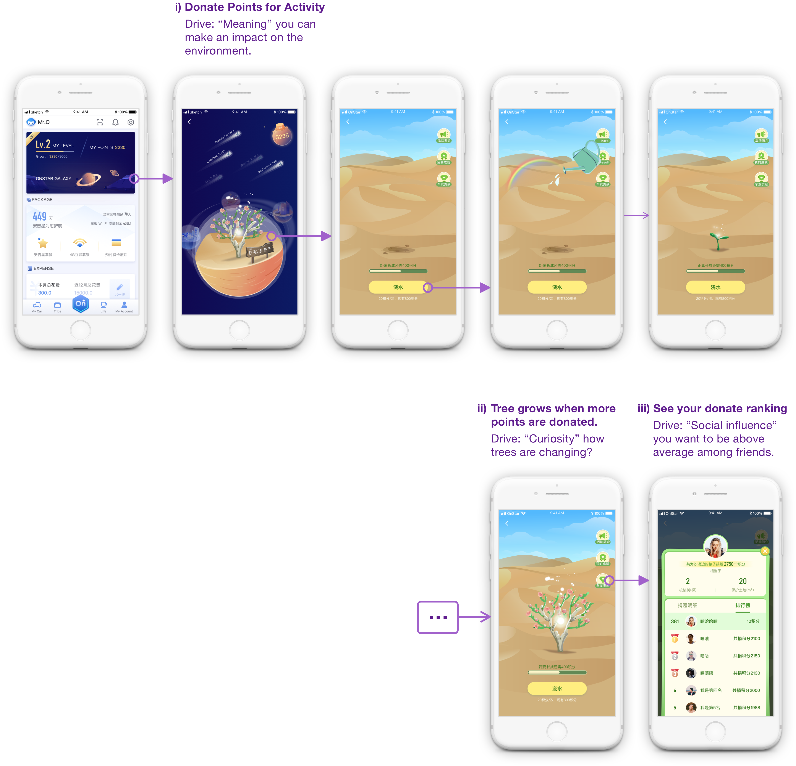
Context
My Role: UX designer & Project Lead
Team: 1 UX Designer (me), 3 visual designers, 1 motion designer, 1 user researcher
Duration: 9 months
Problem
Background: OnStar is a vehicle connectivity service used by General Motors car owners. The service includes vehicle mobile app remote controls, dealer maintenance connections, call center personal secretary services, etc.
Requirement: I was required to create a membership system for OnStar. This membership system should encourage the users to form a habit of using the OnStar service. In this way, the users will be more willing to renew their subscriptions to the OnStar service.
Constraints and Resources: We have a limited amount of money and gifts to incent members to use the app. But we can offer many charitable activities for the members, for instance, planting a tree with members' names in the desert.
Process
Use a workshop to find project direction: I held the design workshop with my designers' team. (I learned this workshop method in the International Experience Design Conference) In the workshop, everyone shared their experience of using competitive products. We put ourselves in the users' hats. We studied the users' experience of getting to know, feeling comfortable using, sticking to, and recommending the products. I analyzed our examples and found that gamification and monetary incentives are the two most effective ways to stimulate users to use one service.
Require User Research: I required interviews and surveys on our users' opinions on the gamification, charitable activities, and forming habits of using OnStar services. The results confirmed my idea of gamifying the membership project.
Brainstorming on the prototype: I held two brainstorming workshops to ideate a game theme that can include two kinds of critical content for the membership system – members' basic information (levels and points) and incentive content. We got nine options, but the galaxy theme won because it fitted the OnStar brand image and is flexible for our incentive events.
Execute the prototype: I design the prototype for the project with Axure. I led three visual designers and one motion designer to deliver the project.
Solution
Data tracking for daily active users: I required data tracking for the daily active users. The daily active users on the function pages raised from 250,000 to 350,000 on average, which means my solution successfully met the requirement of encouraging the users to form the habit of using the OnStar service.
Reflection
I found two things challenging when leading the project. First, when I led design workshops among new designers. The results weren't satisfying because they lacked an understanding of the project and our brand image. If I were doing it a second time, I would introduce our project background and company background with more details before the workshop. Second, I found it hard for three visual designers to keep the style cohesive. To have a coherent visual system, I brought the visual designers together and made a visual standard before they kept working. As a result, we ended up launching a visually cohesive project. If I were doing it a second time, I would help set up the visual standard at the beginning to avoid rework.